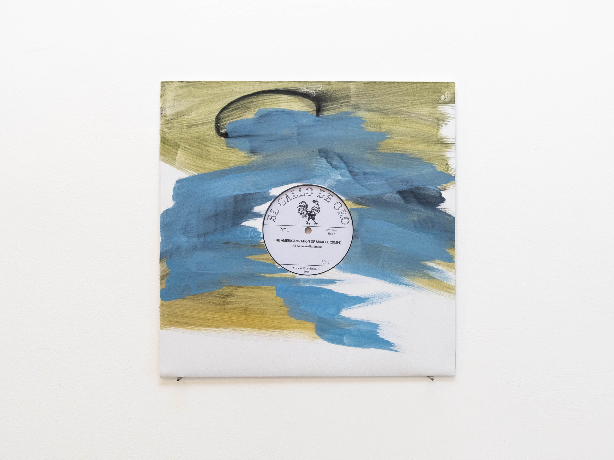

The Americanization of Shmuel
"The angel would like to stay, awaken the dead, and make whole what has been smashed. But a storm is blowing from Paradise; it has got caught in his wings with such violence that the angel can no longer close them. The storm irresistibly propels him into the future to which his back is turned, while the pile of debris before him grows skyward. This storm is what we call progress."-Walter Benjamin, 1940
The Americanization of Shmuel is a polyphonic, multilingual map of songs, places, movements, and assimilation. There are recorded fragments, flotsam and debris left in the angel of history‘s turbid wake. And then there is the noise, an implacable wind, an inverted floor, at times the tide, a valley, snow, sleep–and always a screen, which both masks and becomes a surface of projection. The wind ebbs and flows, eroding syllables and dividing the piece into 18 parts – numerologically the Hebrew word חי or "life", made up of the letters Chet (ח) and Yud (י).
There are three narratives that weave through the piece. The first to appear concerns an intergenerational family. They sing and listen together, trying to remember lullabies. Some of these songs have been reproduced through generations of singing, some of them are lost, or teetering on the edge of memory. They sing and speak a variety of languages – Italian, Spanish, Yiddish, English, Arabic, Hebrew. In the second narrative a piano melody undergoes transformations and permutations. The melody was arranged and popularized by Jazz pianist Bill Evans, but originally written for the 1964 anti-war comedy "The Americanization of Emily." These recordings are made in an artist's studio, where you can hear the artist manipulating a computer that processes and "mis-remembers" the melody using a simple markov chain patch.The third narrative is about an old man, Sam or "Shmuel." He speaks English with a thick accent and recollects moments in his life from before and after World War II. In 1944, he and his family were deported from the Carpathian mountains to the concentration camp Auschwitz. Only Sam and one brother managed to escape in 1945. After being mistakenly taken as prisoners of war by the Soviet army they returned to their village in the mountains, which was unrecognizable, and then smuggled themselves into mandatory Palestine via Britain's Jewish Brigade, before eventually immigrating to Barranquilla, Colombia, then to Newark, New Jersey, and finally to San Juan, Puerto Rico, where he has lived most of his life in diaspora and where he raised his three daughters, one of which is the artist's mother.
But a storm is blowing from Paradise is saxophonist Ella Heron’s melodic response to the embedded histories of the A side. It is a prayer to the Last Angel of History recorded in wind and metal.The theme common to both sides of the record is how private cultures of transmission resist nationalistic monopolies on space, narrative, and history.
Tracklist
1. The Americanization of Shmuel (20:54) Eli Neuman-Hammond
The Americanization of Shmuel - mp3 sample
2. But a storm is blowing from Paradise (19:45) Ella Heron and Eli Neuman-Hammond
But a storm is blowing from Paradise - mp3 sample
Release Information
Released 12/12/2025 digitally, on CD (edition of 100) and on vinyl (edition of 25).
Each vinyl record was lathe cut by Tyler Bisson at Audio Geography, in Providence, RI. The vinyl comes in a numbered edition of 25 in a handpainted sleeve.
Each record sleeve is made with archival 350gsm paper, painted and drawn on both sides with oil, charcoal, and graphite. Every side is unique.
Every CD and record comes with a poster.
To purchase records visit elgallo.bandcamp.com.
Gallery of Records and CD